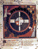

Ptolemy 0.6 Micro Almagest

Ptolemy 0.7 User's Manual

Ptolemy 0.7 Programmer's Manual
Ptolemy 0.7 Kernel Manual
|
| 0.5 Mini Almagest |
|
| Ptolemy 0.6 Micro Almagest
|
|
| Volume I Ptolemy 0.7 User's Manual
|
 | Volume II Ptolemy 0.7 Programmer's Manual |
| Volume III Ptolemy 0.7 Kernel Manual |